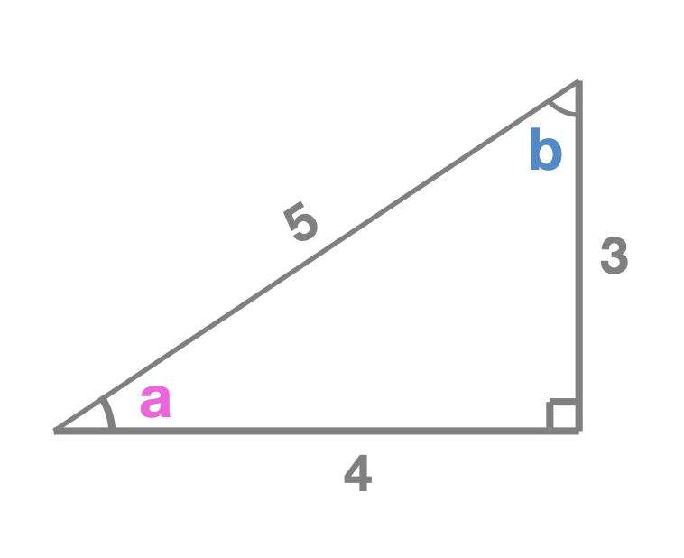

The Three Basic Trigonometric Functions
Trigonometry is the study of the angles in triangles. There are three basic trigonometric functions that relate the angles in right triangles to the length of their sides.
sin(x), is equal to the length of the side of the right triangle
opposite from it divided by the length of the hypotenuse of the triangle. cos(x), is equal to the length of the side of the right triangle
adjacent to it divided by the length of the hypotenuse of the triangle. tan(x), is equal to the length of the side of the right triangle
opposite from it divided by the length of the adjacent side. Let's see an example.
We can figure out the measure of angle a using sine, cosine, or tangent.
sin(a) = 3 / 5.sin(a) = 4 / 5.sin(a) = 5 / 4.But how do we find out what angle a's measure actually is? We use something called inverse trigonometric functions. Just like we can reverse multiplication with division, we can reverse trigonometric functions with inverse trigonometric functions.
The inverse trigonometric functions are written as sin-1(x), cos-1(x), and tan-1(x).
Just as (given that x is an angle) sin(x) = opposite / hypotenuse, sin-1(opposite / hypotenuse) = x.
Therefore, using the sine example above, if sin(a) = 3 / 5, then sin-1(3 / 5) = x.
We can use a calculator to find that sin-1(3 / 5) = 36.89 degrees.